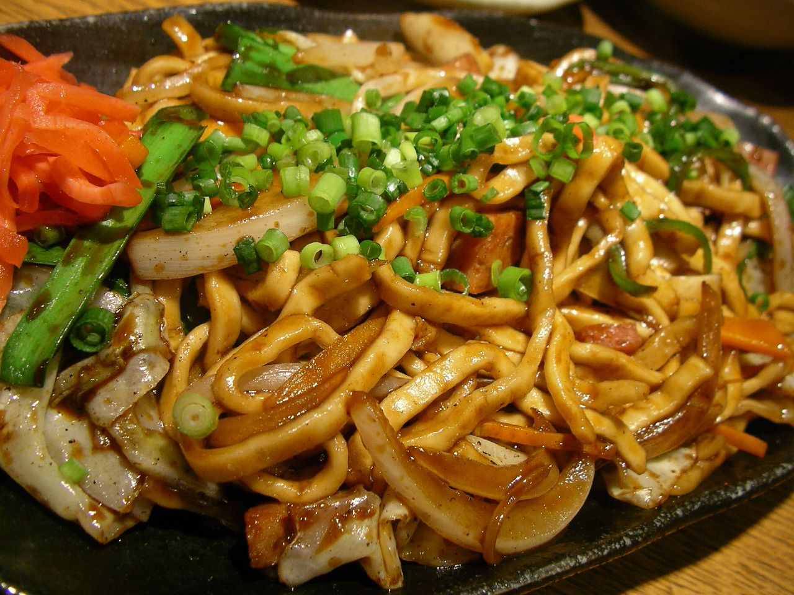

Yakisoba

Description
Yakisoba is a Japanese stir-fried noodle dish with veggies, protein, and savory sauce. It's a flavorful and satisfying street food favorite.
Ingredients
- Yakisoba noodles
- Assorted vegetables (cabbage, carrots, bell peppers, onions)
- Protein (chicken, pork, beef, tofu)
- Yakisoba sauce
- Oil (vegetable or sesame)
- Soy sauce
- Salt and pepper
Steps
- Boil Yakisoba noodles until al dente; drain and set aside.
- Heat oil in a large skillet or wok over medium-high heat.
- Add protein and cook until browned and cooked through.
- Add assorted vegetables and stir-fry until tender.
- Move ingredients to the side of the skillet; add a little more oil if needed.
- Add cooked noodles to the skillet and pour Yakisoba sauce over them.
- Toss everything together until noodles are evenly coated with sauce.
- Season with soy sauce, salt, and pepper to taste.
- Cook for a few more minutes, stirring occasionally, until heated through.
- Optional: Garnish with chopped green onions, sesame seeds, or bonito flakes before serving.
- Serve hot and enjoy your delicious homemade Yakisoba!
Back to main page